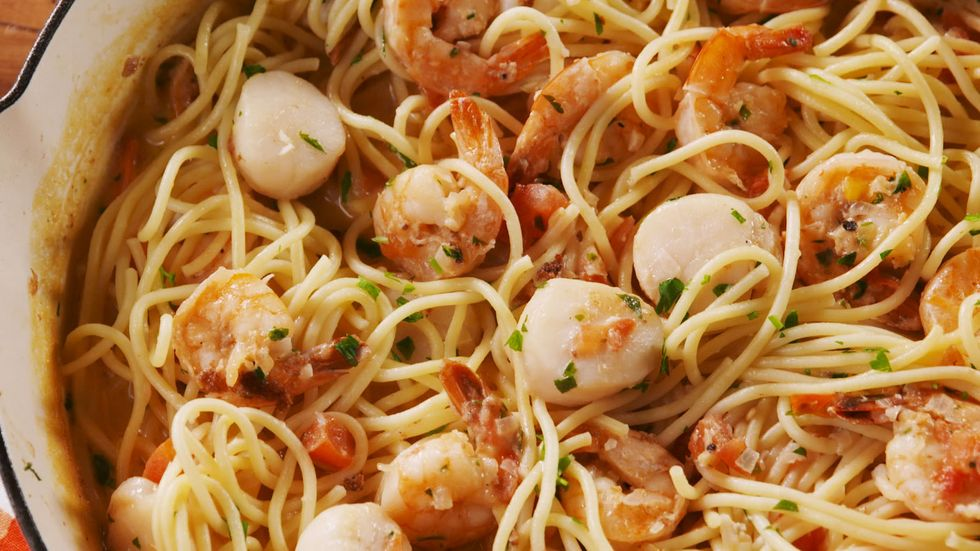

Seafood Spaghetti

Preparation time: 30 min
Ingredients:
- 12 oz. spaghetti
- 2 tbsp. butter
- 1/2 lb. shrimp, peeled and deveined
- 1/2 lb. scallops, patted dry
- 1 small shallot, minced
- 3 cloves garlic, minced
- 3/4 c. milk
- 3/4 c. low-sodium chicken or vegetable broth
- freshly grated Parmesan, plus more for serving
- 1 c. chopped tomatoes
- 1/4 c. freshly chopped parsley
Instructions:
-
In a large pot of salted boiling water, cook spaghetti according to
package directions until al dente. Drain and return to pot.
-
Meanwhile, in a large skillet over medium heat, melt butter. Add shrimp
and scallops and season with salt and pepper. Cook 2 minutes per side,
then transfer to a plate.
-
To skillet add shallot and garlic cook until soft and fragrant, 3
minutes. Add milk, broth, Parmesan, tomatoes, and parsley and season
with salt. Simmer 3 minutes more, then return shrimp and scallops and
toss until combined. Squeeze with lemon juice
- Add cooked spaghetti and toss until fully coated.
- Garnish with parsley and serve with Parmesan.
Main Page